Rafael Polo is a full-stack software engineer based in Basel, Switzerland, working with data and AI. He has led product teams and builds tools that turn complex datasets into knowledge. Moving across languages, code and design, he has lived in Rio de Janeiro, Berlin, Athens and Lisbon.
Read my CVProjects graph
Browse selected projects
Open-source platforms, tools and data visualizations:
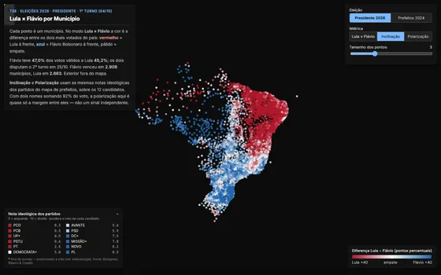
Eleições 2026Lula × Flávio, municipality by municipality, with party ideology2026
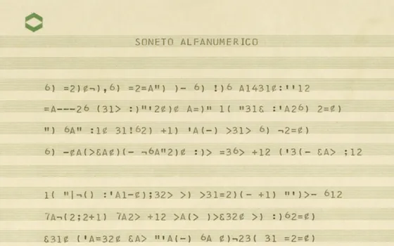
ErthosDecoded the cipher behind a 1974 Brazilian computer-poetry2026
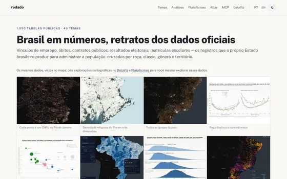
Rodado1,050 official Brazilian tables, queryable by AI
agents over MCP2026
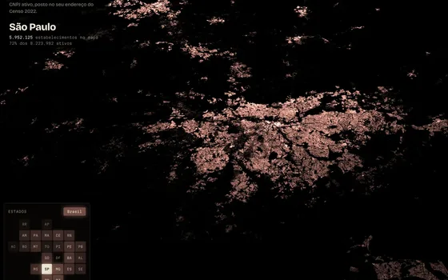
brasilume21M Brazilian businesses, matched address by
address2026
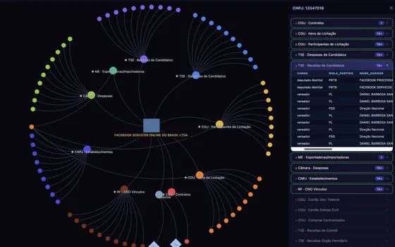
datativeData Investigation platform with force graphs2026
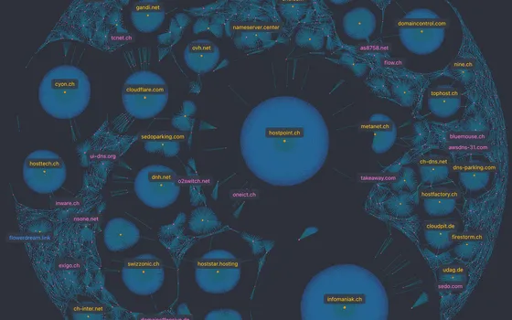
helvetiscanScanner of 2.5M+ Swiss .ch domains &
vulnerabilities2026
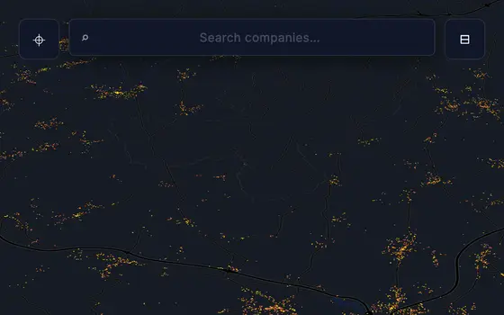
swissvizAll Swiss companies on interactive map2026
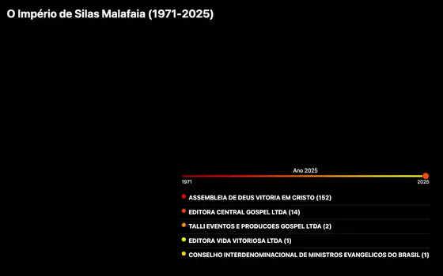
malafaiaUpdated map of a religious empire for
Journalists2026
brasilianoBrazil's historical photo archive, 13k items, in
3D2026
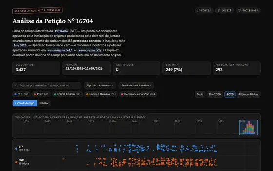
pet167043,437 STF documents on the Banco Master
case2026
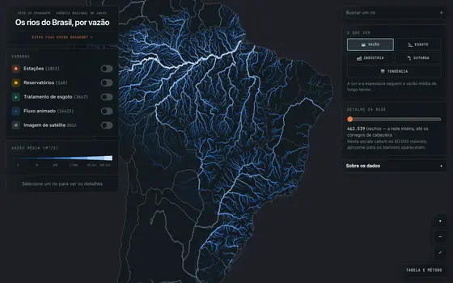
rios-do-brasil462k Brazilian river segments colored by flow
trend2026
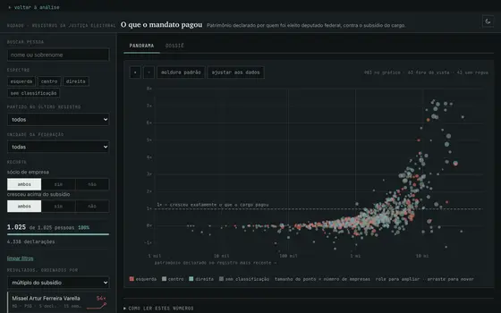
TSE-bensDeputies' wealth growth vs. their official
salary2026
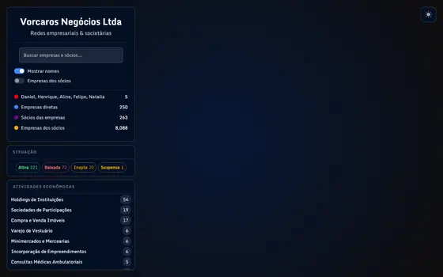
vorcarosOwnership graph of 8,088 connected
companies2026
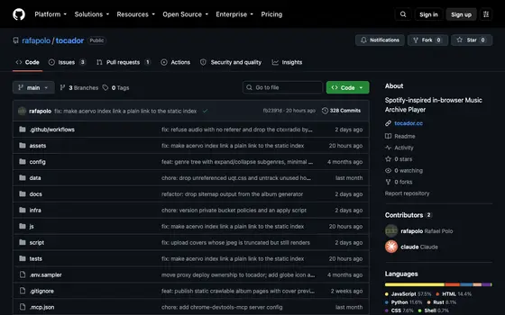
TocadorSpotify-alternative player with +7k Brazilian
artists2026
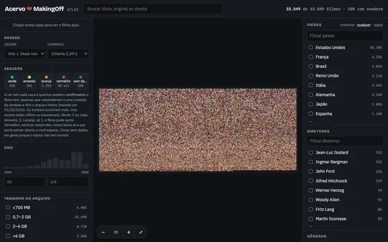
Atlas MakingOff33k rare films on a zoomable cinema wall, with magnet links2026
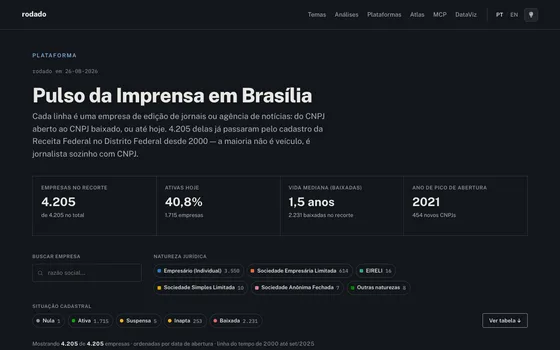
Pulso da ImprensaLifecycle of 4,205 Brasília press companies since 20002026
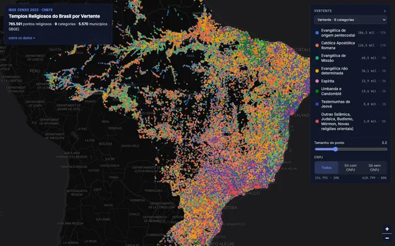
Templos785k religious temples across Brazil, coloured by denomination2026
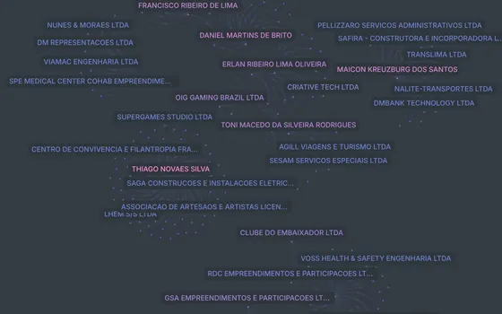
Pegadas TigrinhoCorporate network of Tigrinho gaming Scam in
Brazil2025
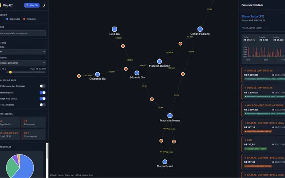
VISOVisualize parliamentary expenses on graphs &
live SQL2025
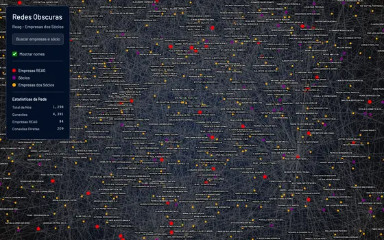
fincrimeVisualize corporate networks cited as
money-laundering2025
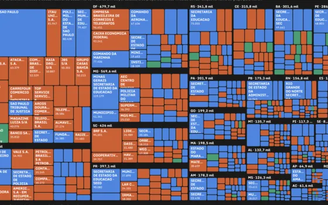
RAISExplorer of 40 years of Brazilian formal jobs2025
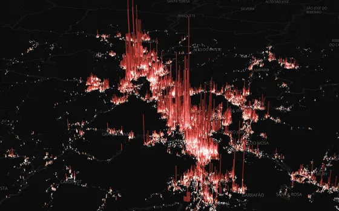
FribaNova Friburgo 3D population2025
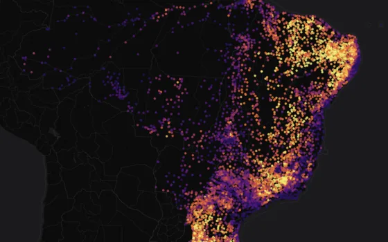
religioesMunicipal religious shift between Brazil's
Censuses2025
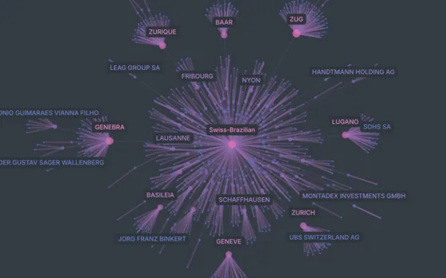
BraSwissNetwork of Swiss companies headquartered in Brazil2025
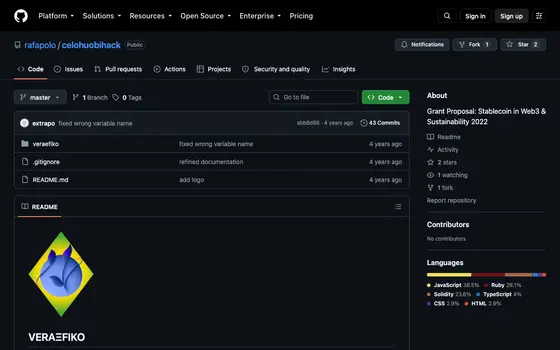
VERAΞFIKOAwarded Web3 SmartContracts bridging fees into
carbon credits2022
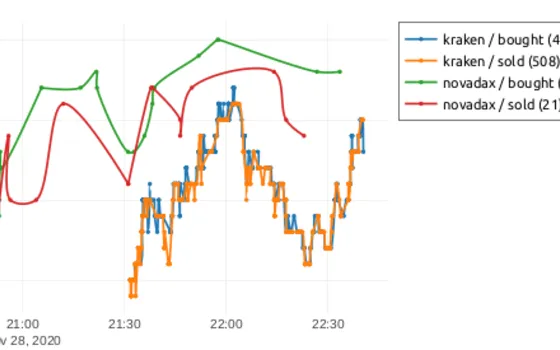
speculariVisual crypto arbitrage analysis between exchanges 2022
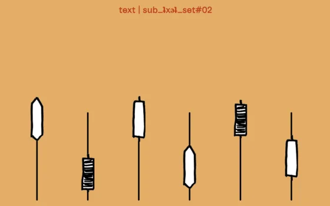
SubZKUInteractive audio guide for ZK/U Berlin2019
TribunaOrganized all TSE electoral DB for
journalists2018
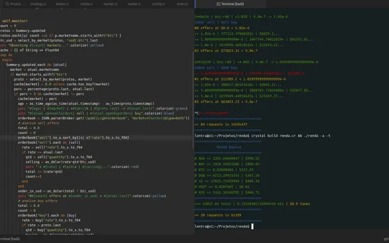
RendaFramework for crypto-economic experiments2018
ConnectasInvestigation published on The Intercept2018
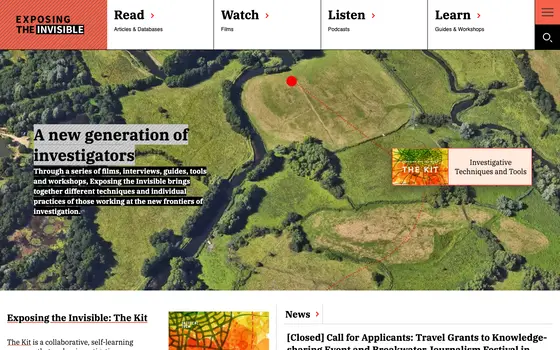
Exposing the InvisibleInvestigation resources for Tactical Tech2016
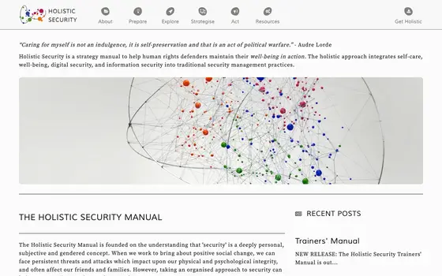
Holistic SecurityDigital security toolkit for Tactical Tech2016
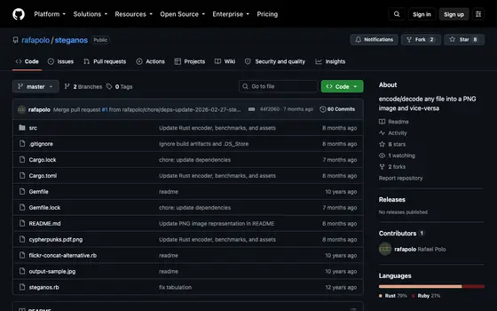
SteganosConvert any digital file as an image (Rust
rewrite)2013
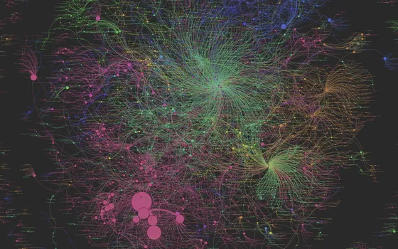
Mostre!me CulturaAll Ministry of Culture data visualizations2013
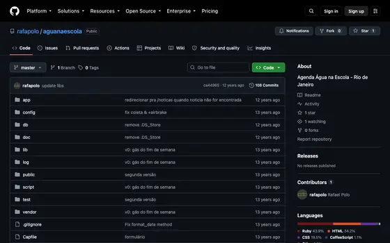
Água na EscolaWater education platform for RJ Secretary of
Environment2013
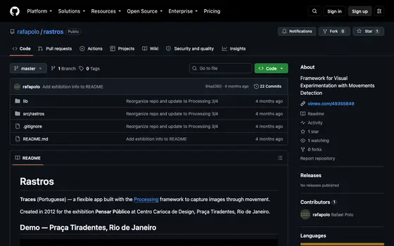
rastrosVisual experimentation with motion detection 2012
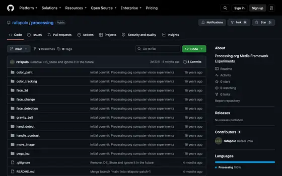
processingCreative coding sketches and visual
experiments2012
WebDoc GraffitiAward-winning Web-Documentary project2012
Pensar PúblicoPublic policy Studio platform2012
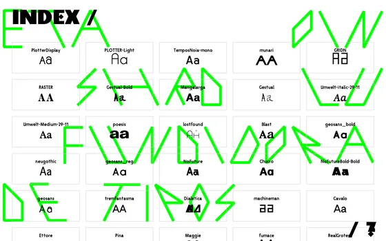
Etaoin ShrdluType foundry with an in-browser font tester2012
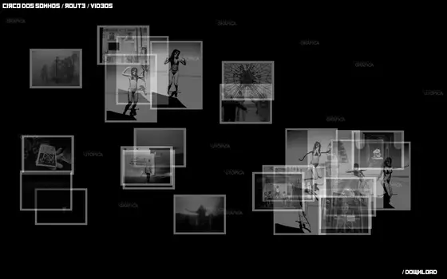
Gráfica UtópicaMain RJ Printing collective website2011
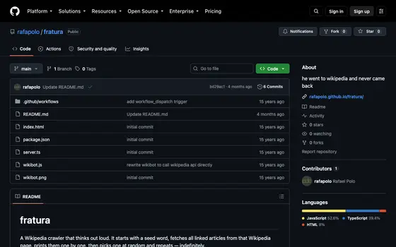
fraturaHe went to Wikipedia and never came back2011
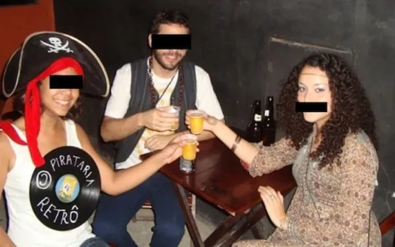
Damnatio MemoriaeSoftware-art for Memefest that damages memories2011
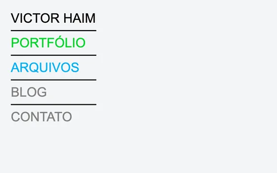
Victor HaimPortfolio and blog CMS for a Rio photographer2011
Razão e AmbienteExhibition website for Museu de Arte Moderna of
SP2010
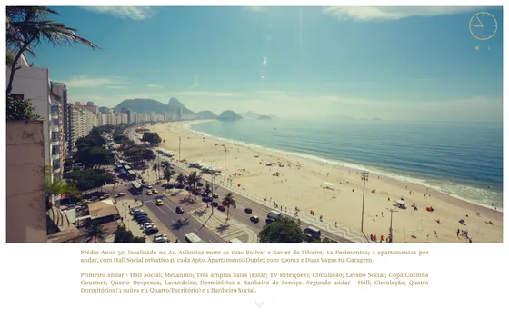
Av. Atlântica 1101Day-and-night showcase of a Copacabana duplex2010
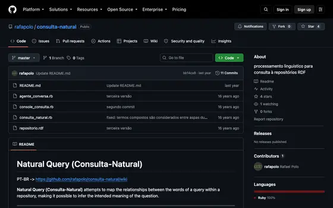
Consulta NaturalSPARQL/Google Talk NLP conversational agent2009
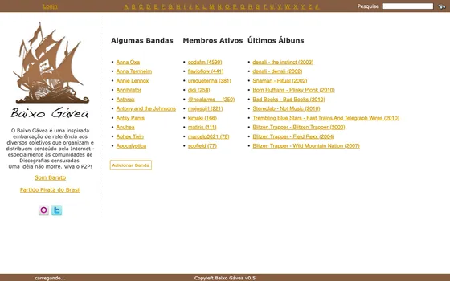
BaixoGáveaMusic discography and torrent-link community portal2009